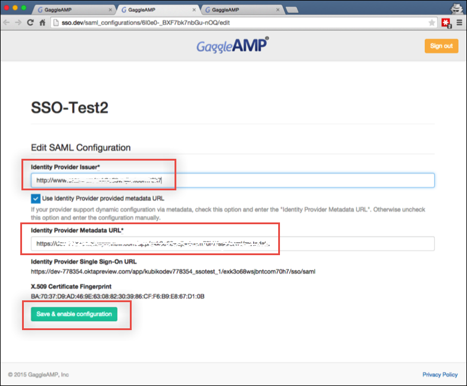

Contact GaggleAMP Support via the application or by emailing support@gaggleamp.com and make the following request:
We would like to enable Okta integration for our Gaggle app.
GaggleAMP Support will respond and provide you with a special link that you or your IT team can use to configure Okta inside GaggleAMP.
Click on the link and enter the following information (see screen capture at end of step for reference):
Identity Provider Issuer: Copy and paste the following value:
Sign into the Okta Admin Dashboard to generate this variable.
Identity Provider Metadata URL: Copy and paste the following value:
Sign in to the Okta Admin app to have this variable generated for you
Click Save and enable configuration.

Done!
Notes:
IdP-initiated flows, SP-initiated flows, and Just In Time (JIT) provisioning are all supported.